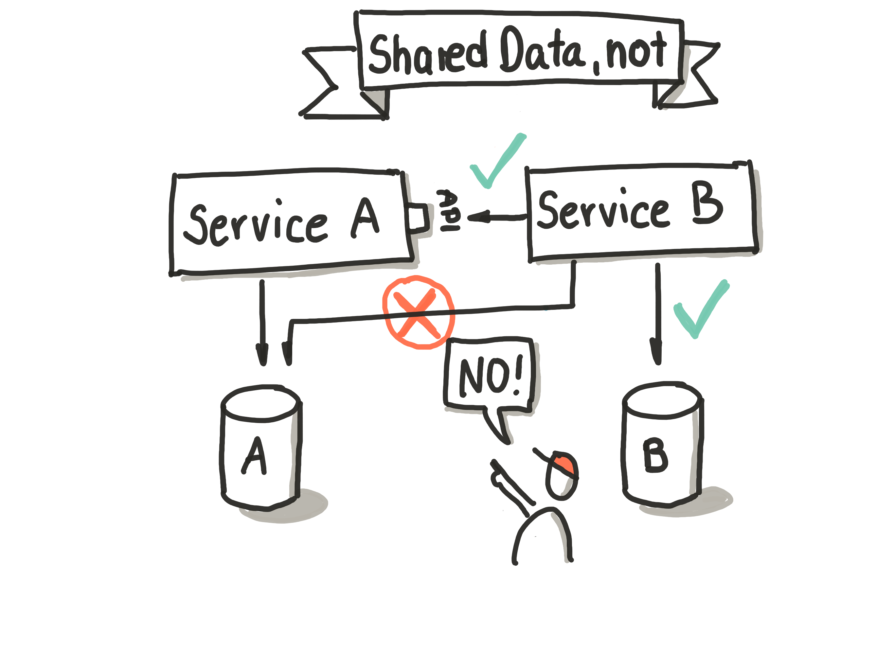
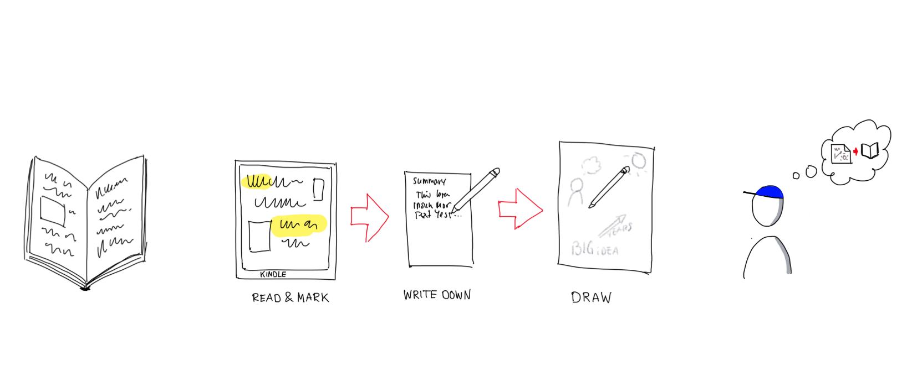

Using Sketch Book Summary (SBS) to remember content what matters to me.
Over the time I developed my own way of remembering what the content of a book was. I’m reading a lot self improvement, time management, management and culture books. A trainer once told me if I could remember months later only 10% what was in the book I’m really good. I wanted to change that.
I’m reading mostly on my Kindle. I have all the books always with me. The nice thing about it is, that I could mark text which is important or useful to me. My first iteration was just doing that. Turn out at most I was reading all notes at the end again. After a while I figured that did not help enough and I could do better.
The second attempt was to write down by hand all the notes on a sheet of paper. Writing things down with a real pen helps you to remember things. This was better. I made the mistake to mark a lot of text and so I had to write down a lot. From time to time I read through the notes again but it took always some time and it was too much.
Say hello to Sketch Book Summary.
Back some years ago I started to draw our Rules of Play on an A0 sheet of paper. Every rule as a visual reminder.

In contrast what everybody is saying: This is easy to do. It is not hard. Believe me.
So I started to wonder if I can apply this to a book. I would weed out the not so important things since I can not draw everything. Only what really matters would survive. This things are visual so I can be remembered very quickly what was important to me in this book. It is like sketch notes for a talk. I did some of those for conference / youtube talks and seminars I attended. Now I’m doing it for books as well.
You might find that useful.
